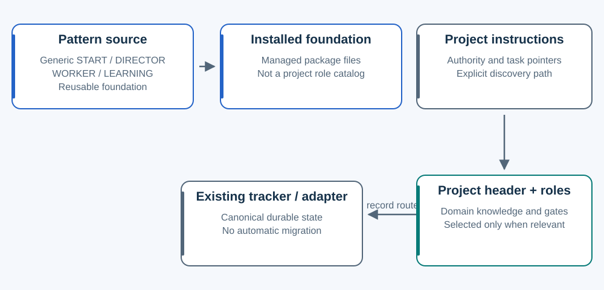

The foundation and the project stay separate.
Reusable method files do not replace project authority, domain knowledge or the canonical tracker.

| Layer | Example | Ownership and use |
|---|---|---|
| Pattern foundation | START, DIRECTOR, WORKER and deferred operational guides | Managed reusable contract; selected task/action requirements load before use. |
| Project authority and discovery | AGENTS task pointer; departments/experience/HEADER.md | Project-owned. Applicable authority survives updates and role refactors. |
| Project knowledge | ART, ENGINEERING, INDEPENDENT_TEST, accepted craft references | Selected responsibility and task manuals; independent checks stay separate. |
| Canonical state | Fresh request bundles, or the existing tracker and verified adapter | One route. An older .producer store is not permission to create a second ledger or change its format. |
Actual record operations
Starter 3 installs the established request-bundle backend with config schema 1/store schema 2 and the exact director-request-bundles format. Its thin launcher supplies the correct root. Load the canonical pattern/starter/payload/API.md and its record/tooling references before state actions.
python3 .director/requests.py status --limit 5 --max-bytes 12000
python3 .director/requests.py current REQ-... --max-bytes 12000
python3 .director/requests.py validateCurrent views are bounded and snapshot-paged. The helper still validates original sources and histories internally. Use fresh UUID event IDs, returned revisions and supported lifecycle/recovery commands—not raw folder moves or edited record JSON. A helper validates declarations; it does not authenticate human approval, execution or external evidence.
This fresh installer provisions tracked mode only. An explicit lean choice remains available through the preserved legacy/existing-tracker route with its smaller retention promise; it is not a flag that silently drops open commitments or changes a mature store.
What travels between machines
Fresh durable config, requests, sources and receipts are Git-eligible by default; scratch, locks, caches and backups stay local. Installation does not commit or push. Preserve existing privacy choices and ignore rules. Public or unknown remote visibility requires one factual warning about exact-source history, recorded only after actual delivery.
Commit/push/pull continuity uses one machine writer at a time. Mature trackers and explicit private stores remain canonical. Starter 2 data is incompatible and retained for separately reviewed recovery, not silently migrated.